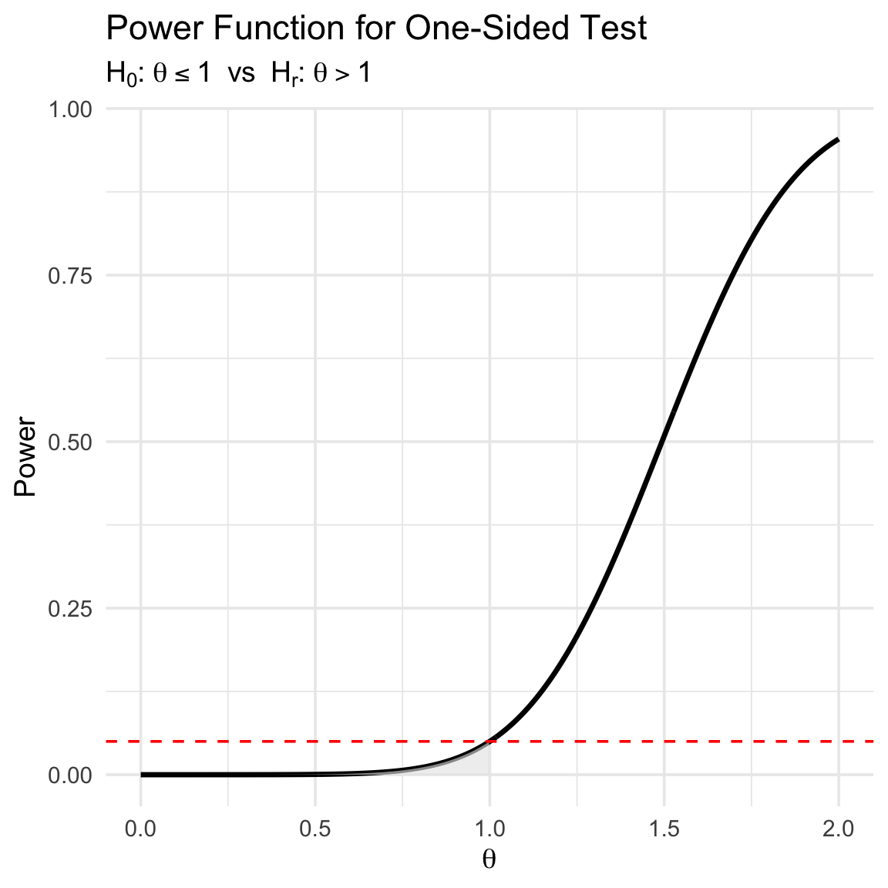
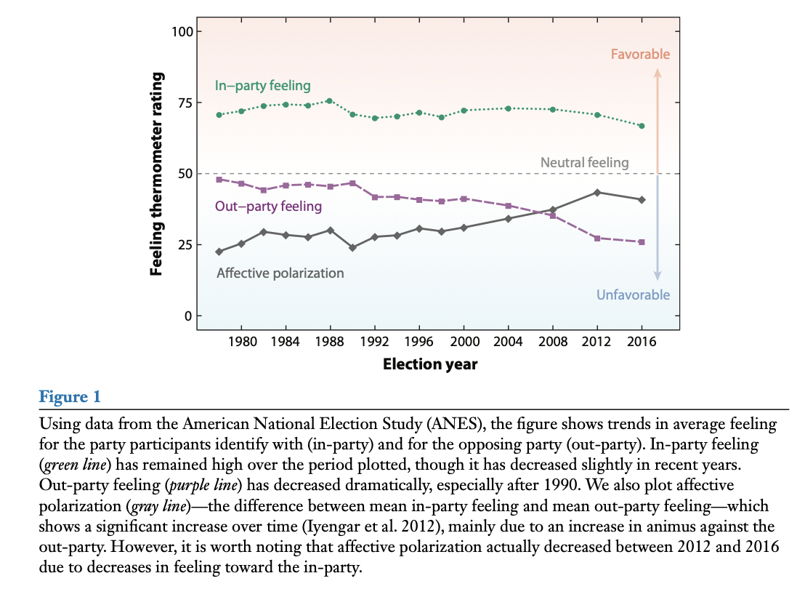
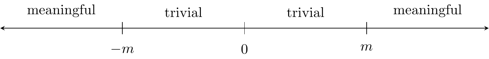
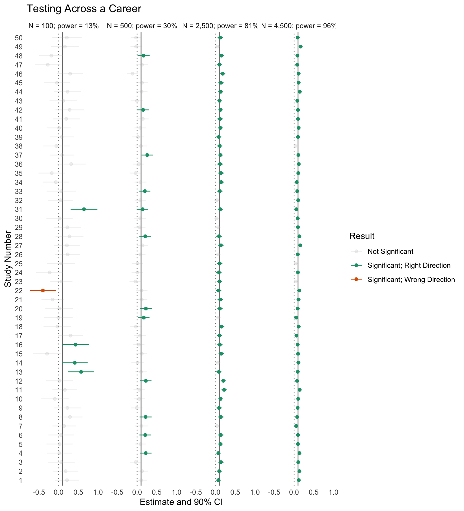
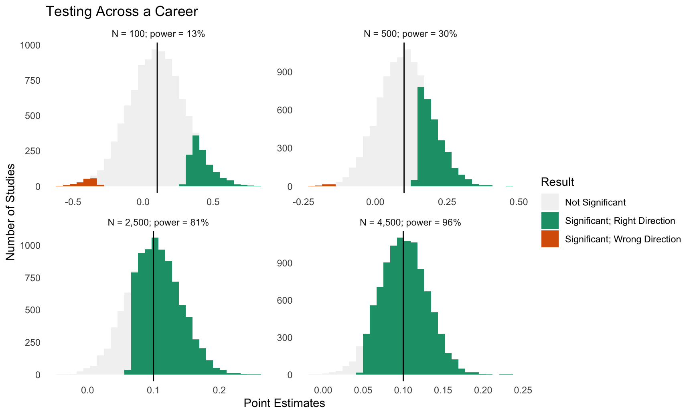
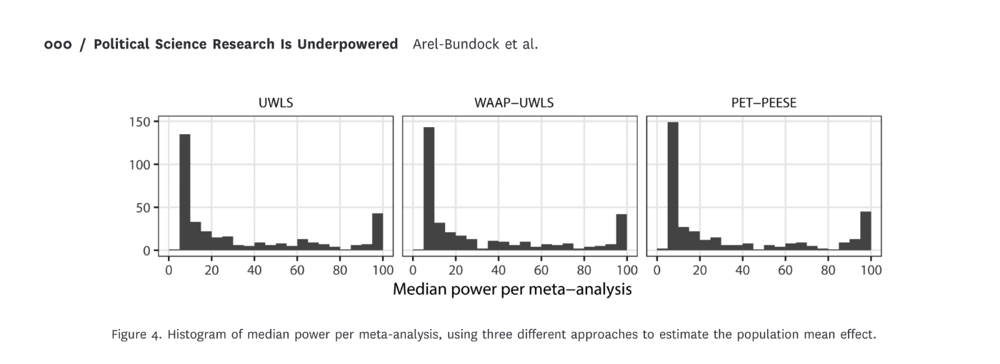

12+ years post-PhD
Claim 1: As political methodologists, we should place greater focus on critiques and refinements of current common practices rather than on pushing the bleeding edge forward. Both are great, but the former is undervalued. Examples: textbooks, software, tutorial-style papers, and reviews of current practices.
Claim 2: As a discipline, we should value description more!
My description of political science: An investigation of how we can intervene in the world to make the world a better place. (Not everyone agrees!)
Advice
Avoid the race to a regression.
Claim 3: As a discipline, we should be more mindful of noise.
At the core of empirical research, we have claims about the world. These can be descriptive or causal.
Example: “Ordinary Americans increasingly dislike and distrust those from the other party” (Iyengar et al. 2019).

Generally, we want to make empirical claims when we think they are correct (i.e., when we can rule out other claims).
A researcher posits a theoretically interesting hypothesis \(H_r\), sometimes called the “alternative” or “research” hypothesis.
Definition 1 A research hypothesis \(H_r\) is a claim that the parameter of interest \(\theta\) lies in a specific region \(B \subset \mathbb{R}\).
Typical forms in political science:
Each research hypothesis implies a null hypothesis.
Definition 2 \(H_0\) claims that \(\theta \in B^C\) (i.e., the research hypothesis is false).
Note: The null does not always state “no effect.”
For example, if \(H_r: \theta > 1\), then \(H_0: \theta \le 1\).
A test statistic summarizes evidence against the null hypothesis.
Definition 3 A test statistic \(T(\mathbf{x}) \in [0,\infty)\) increases (or decreases) with evidence against \(H_0\).
A hypothesis test divides possible values of \(T\) into:
Important: Failure to reject \(H_0\) mean ambiguous evidence, not evidence that \(H_0\) is true.
Two types of errors:
| Name | Label | Longer Label | Error Rate | Person in Charge |
|---|---|---|---|---|
| Type I | “False Positive” | You claim that your research hypothesis is true, but it is not true. | 5% | Statistician |
| Type II | “False Negative” / “Lost Opportunity” | You cannot make a claim about your research hypothesis. | ??? | You, the researcher |
Given a test statistic \(T\) (larger values → more evidence against \(H_0\)):
Definition 4 \(p\text{-value} = \max_{\theta \in B^C} P(T(\mathbf{X}) \ge T(\mathbf{x}))\)
“The probability of obtaining data more extreme that the data we actually obtained if the null hypothesis were true.”
Reject \(H_0\) if and only if \(p \le \alpha\) (e.g., \(\alpha = 0.05\)).
Definition 5 The power function gives \(\Pr(\text{reject } H_0 \mid \theta)\).
We want:
Definition 6 A size-\(\alpha\) test has maximum Type I error probability equal to \(\alpha\).
Let \(\theta = \mu_1 - \mu_2\).
Test statistic: \(T = \frac{\hat{\theta} - 1}{\text{SE}(\hat{\theta})}\)
\(p\)-value: \(p = P(Z \ge T)\) where \(Z \sim N(0,1)\).
Reject \(H_0\) if \(p \le 0.05\). Otherwise, evidence is ambiguous.

One way to create a confidence interval is to invert a hypothesis test.
For example, suppose a hypothesis \(H_r: \theta > m\).
We could similarly do this for \(H_r: \theta < m\).
If we use the \(L\) and the \(U\) from above, we have a 90% CI.
The endpoints of this 90% CI tell us…
Warning
Be careful of your claim!
Advice
Only make a claim if the claim is hold for the entire confidence interval.
Read Rainey (2014) and McCaskey and Rainey (2015).
Exam Question
I like to say: “Only make a claim if the claim is hold for the entire confidence interval.” Using the arguments from Rainey (2014) and McCaskey and Rainey (2015), give two examples of how current practice deviates from this advice. Explain why these deviations matter. Explain a how my advice applies to these two sitations.
Examples:
I write about this in Rainey (2014).
Define a threshold \(m > 0\) for the smallest substantively meaningful effect.
Definition 7 \(H_r : \theta \in (-m, m)\) = effect is negligible.
Definition 8 \(H_0 : \theta \le -m \text{ or } \theta \ge m\) = effect is meaningfully large (+ or -).
Use the two one-sided tests (TOST) procedure.
We reject \(H_0\) if the \((1-2\alpha)\) confidence interval lies entirely inside \((-m,m)\). A 90% CI gives you a size-0.05 equivalence test.
How to compute power?
The MDE: What effect can I detect with 80% or 95% power?

You want your standard error to be about \(\frac{m}{3.3}\).
For your research area, you should have this diagram in mind, an \(m\) in mind, and the implied target SE in mind.
# parameters
sd_y <- 1.0
ate <- 0.1
N <- c(100, 500, 2500, 4500)
# compute power
se <- 2*sd_y/(sqrt(N)) # rule 3 from "power rules"
pwr <- 1-pnorm(1.64 - ate/se); pwr # rule 2[1] 0.1271432 0.3008470 0.8051055 0.9567450# do MC simulation
set.seed(123)
res_list <- NULL
iter <- 1
for (i in 1:10000) {
for (j in 1:length(N)) {
# simulate data and fit model
y0 <- rnorm(N[j]/2, mean = 0, sd = sd_y)
y1 <- rnorm(N[j]/2, mean = 0 + ate, sd = sd_y)
fit <- t.test(y1, y0, conf.level = 0.90)
# store results
res_list[[iter]] <- list(
study_id = i,
N = N[j],
pwr = pwr[j],
est = fit$estimate[1] -fit$estimate[2] ,
l = fit$conf.int[1],
u = fit$conf.int[2]
)
iter <- iter + 1
}
}
res <- bind_rows(res_list)
res |>
group_by(N, pwr) |>
summarize(n_mc = n(), mc_pwr = mean(l > 0))# A tibble: 4 × 4
# Groups: N [4]
N pwr n_mc mc_pwr
<dbl> <dbl> <int> <dbl>
1 100 0.127 10000 0.123
2 500 0.301 10000 0.298
3 2500 0.805 10000 0.804
4 4500 0.957 10000 0.955

When you test with low power, you make three mistakes:
See Gelman and Carlin (2014).
What are the implications for literatures if we have 100s of researchers conducting poorly-powered studies and authors, editors, and reviewers filtering on statistical significance?
“Under generous assumptions, we show that quantitative research in political science is greatly underpowered: the median analysis has about 10% power, and only about 1 in 10 tests have at least 80% power to detect the consensus effects reported in the literature.”

Is this okay? Tragic? Desirable?
You are an editor of a journal and have received two thoughtful reviews for a well-done survey experiment. While previous work suggests that a treatment should have a positive effect, this new paper on your desk suggests that the treatment has a negative effect and they find a statistically significant negative effect.